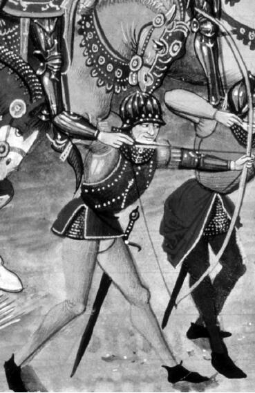

首先应该承认，成文法法典的发展并不总是产生在广阔领地内对整个民族都适用的法律。中东信奉伊斯兰教的地区在很长的历史时期内都没有这样的法律。在政治上属于帝国体制的乌玛政体（共信者公社）存在期间，反而有多种多样的律法——哈乃菲派、马立克派、沙斐仪派、罕百里派，每一种都出自对伊斯兰教法——沙利亚法——的特殊阐释。尽管在某一特定地区，其中一派的律法可能比另外三种更普及，但穆斯林仍可以从中做出选择。同时并存的不同法律，只能是民族领地形成的障碍，因为民族的统一需要在领土范围内推行一种权威法律来实现。因此，中东信奉伊斯兰教地区的人们在很长历史时期内或效忠自己出生的乡村，或效忠乌玛；他们通过如苏非派之类的宗教机构，在两种效忠对象之间徘徊。
然而，伊斯兰中东地区确实出现了法律的创新，解决乡村和世界共信者公社这两极间的关系。例如通过法律手段（the hiyal）来创立商务公司并介入不同地方和地区之间的贸易；这些法律手段不直接来自伊斯兰教法——沙利亚法。而且，伊斯兰中东地区确实偶尔出现大范围的统一，其中两个例子就是伊朗人和柏柏尔人统治的马格里布地区，尤其是摩洛哥。奥斯曼帝国的土耳其人和埃及的马木鲁克人的军事冲突（1250—1517）大概也能说明，即便在世界共信者公社范围内，仍有为捍卫自己领地而引起的争斗。尽管如此，渗透于伊斯兰教文明的不同法典，以及保守的塔格利德法律宗旨（归顺伊斯兰教传统），都有自己的“当地法律”，从而成为民族巩固的障碍。
当然，也要观察其他形式的法律关系。许多研究给人的印象是古代和现代社会之间有一个剧烈的历史断层。与此相反，从上古到中世纪一直流传着无数书写成文的法律规范。事实上，法律史学家R.C.范·卡内冈对中世纪的法律作过论断，那个时期的法律数不胜数，且极受重视。中世纪欧洲产生了多种文字著成的法律文本，其中有拉努尔夫·格兰维尔的《论英格兰王国的法律和习惯》（1187）和布拉顿（亦称布雷克顿）的亨利的《论文》（1260）。法律被写进书本，即传统通过物质的形式“显形”，其重要性在于，它使传统更加稳固，因而更长久地延续下去。传统的物质表现有不同形式。例如在古代近东，通过字母书写，也通过把《圣经》翻译成科普特语 [3] （公元4世纪）、亚美尼亚语（公元5世纪）、古斯洛伐克语（公元9世纪）和法语（公元12世纪）等各种文字，语言变得稳固。传统还通过建筑的形式呈现出来，例如古代以色列的耶路撒冷圣殿，还有中世纪英格兰的坎特伯雷大教堂。这种现象的发生，更大可能地使基于物质形式的传统而建立的社会关系变得稳固，这种稳固是民族文化出现所必需的。
促使形成欧洲中世纪时期领地格局的法律谱系很抽象，但我们还是可以考察一番。
首先，教堂规定的教会法在这个谱系之外，因为它是信仰耶稣基督并奉其为救世主的信徒们的法律，其效力超出了领地界限。这并不否认中世纪教堂不可避免地作为宗教机构参与对世间事务的管理。例如公元11世纪末的“主教叙任权之争”，就是为了决定大主教和国王谁更有权任命主教。尽管如此，除了强调教会法对欧洲共同体传统做出了贡献之外，我暂不考虑其他因素。
在法律谱系的一端，人们看到意大利北部那些从领地上来看界限分明的城市公国，和德国境内独立的地区政体。这些公国和地区政体虽然有完善的地方法律规范，却没有一个像权威的高级法院或立法机构这样统一的中央，能通过自己的法律机构，把不同公国和政体联合成一个民族。再看谱系的另一端。法国13世纪重新出现了一个强权君主之后，的确有统一的中央，其中包括皇家法院和巴黎高等法院。这些中心以及以“限制教皇权力主义”著称的法国天主教大教堂的出现，都极大影响了占据广阔领地的法兰西民族的形成。与意大利北部境内的公国和德国境内的独立政体相比，人们看到法兰西民族在13世纪末出现的过程较为完整。尽管如此，法兰西王国在法律上仍呈现出多样化态势。12世纪罗马帝国的法律在法国南方地区再次盛行，与北方地区形成对比，从而使法律的多样化更为显著。然而，早在12世纪末期，英格兰则出现了另一种不同模式的法律关系，让人看到了其民族法律的出现。
与国王及其亲属和家臣的私人关系，或与封建体系中地方贵族和其下属之间特有的私人和上下级关系不同，在中世纪的英国，这种关系被经由国家法律确立的更为广阔的领地关系削弱了。在亨利二世统治期间（1133—1189）和以后的时期，法律制度的发展说明了这一点。当时，中央出现了一个由职业法官组成的永久法院（御前会议），地方法院出现的分歧越来越多地由中央派出的巡回法官，依据国家法律来裁决。而且，到了亨利二世时期，陪审团机构（起先由一个公共官员召集一批邻居，宣誓如实回答某个问题；但到13世纪初，陪审团成为由同伴裁决的一种方式）在英国各地被接受，因而在裁决过程中有普通民众的参与。这些法律发展产生的结果是，在整个英国，作为民族及其法律代表的国王，以及国王的代理人（巡回法官），被视为个人和公共财产以及权力的保护者；他们保护的是“国王的和平”。
其他法律方面的发展，包括组建国家军队，也支持建立领地内的民族关系。这可见于国王亨利二世于1181年颁布的《武器法》。国家军队中不仅有配备坐骑、盔甲的富人，也有“那些只需要弓箭”的穷人。召集穷人应征入伍，是国家在法律上对地方贵族及其臣民关系的又一种干预。这一法律和军事上的发展，其结果是更大范围地增强了保卫国家的责任感。在战争中共同效力让人意识到，所有的穷人和富人不但是自己地方共同体的一员，也是国家的一员。技术的发展也促进了由穷人组成的步兵对国家的效忠。13世纪末开始使用力量强大、可刺穿盔甲的长弓，这使穷人步兵在军事上比骑兵更有优势。
后来，1215年英国订立了《大宪章》，基于其中第14条，到1295年成立了国会立法机构，由全英格兰各郡和城镇的代表组成（这与巴黎高等法院不同，后者主要指具有裁决职能的法院和法国三级议会，1614到1789年期间没有召集）。

图6 可以刺穿盔甲的长弓
由于这些法律发展，英格兰民族共同体的领地关系出现了，其国王要受法律约束。可以肯定，其他社会在不同历史时期也期待法律能有这样的发展。如历史学家弗里茨·科恩所述，德国中世纪法律赋予人抵抗国王的权力；《申命记》第17章中提到，在远古时期，古代以色列国王对法律的服从也显而易见。但是，正是在中世纪时期的英国，这些发展表现得极为显著。
当然，也有很多复杂情况使领地概念变得模糊，如威尔士、苏格兰、爱尔兰，还有亨利二世对法国安茹和诺曼底的统治。民族国家的创立还有其他一些复杂情况，例如宗教的纷争导致国王下令处决坎特伯雷大主教托马斯·贝克特（1170）和托马斯·克兰默（1556）；政治冲突导致英国大法官托马斯·莫尔（1535）被处死和克伦威尔领导的革命。这些例子再次表明，民族社会关系的稳固只是相对的。重要的是，一个公共的、统一整个领土的国家法律传统在英国人的集体自我意识中建立起来；虽然偶尔受到军事威胁，但维护这一传统的机构最终也相应建立起来。
英国中世纪法律发展的情况表明出现了一种法律准则，这种准则被持续不断地用于治理由它确立的东西，即一个民族的领地关系。显然，难以预料的政治因素（例如有野心、有实力的国王意欲扩大其势力范围）影响了民族在领地内建立统一的法律机制。而且，法律有时也顺应自身的、常常是极为偶然的发展轨迹。例如，通过英国普通法（“普通”的意思是，它适用于整个英国）传达的英国“圣明法典”的传统，在《大宪章》中得到承认和肯定。人们只能设想，假如在普通法传统被肯定和确立之前，罗马帝国的法律在欧洲大陆复兴时危及英国，那么中世纪英国的法律和民族的发展将会多么不同。之所以这样设想，是为了认识到，有许多看似偶然的因素也会促使民族发展变化；也是为了认识到，坚持认为民族发展只有一种主要原因是多么有悖于事实。
由于国家层面的法律不断在全国实施，把之前有文化差异的人口融合成为一个民族，它在这种意义上扩展了社会关系。但这种扩展受到民族两面性中的另一面——亲属关系——的制约，尽管亲属关系覆盖的空间广泛，又受到领地的制约。人的身份限制法律的持续实施。这不是指一个人是贵族还是附庸，而是指他是不是英国人。从13世纪开始到1870年，外国人不能在英格兰拥有真正的财产，也无权寻求地方法院的庇护。人们普遍认为，所谓英国的土地只能属于英国人。
民族的定义，是由出身情况决定的、广阔领地内的一种关系。我们进一步认识到，作为一种覆盖领地范围广泛又受到制约的社会关系，民族形成的目的是为了繁衍、传承和延续生命。民族以民族国家的形式存在，就成为保卫生命的一种机构。可以肯定，即便有些社会关系的主要目的是为了生存，但如果只看到它延续生命的作用，就很难对社会关系有透彻的理解。这样理解民族也同样有所欠缺。甚至对家庭这一延续生命、在历代人之间传递财富、传承宗教的典型形式，这样理解也是欠缺的。这再次证明，人类的追求是多种多样的。人类生活中面临的问题也是多方面的：如何面对死亡，男女之间的矛盾如何解决，个人与社会的关系应该如何，怎样理解人类存在和宇宙的关系，等等。这些问题和生活中的其他问题，以及与之相伴的多种传统混杂交织在一起，形成既统一又多元的中央，围绕这个中央又形成不同的民族共同体，每一个民族对这些复杂的问题都有自己的回应。
民族常常被比喻成家庭，有时其实被认为是某种大家庭。这可以理解，因为民族和家庭关系都是亲属关系。但是，它们还有一个重要区别。要理解这个区别，需要更详细地考察领地和亲属关系之间的联系。